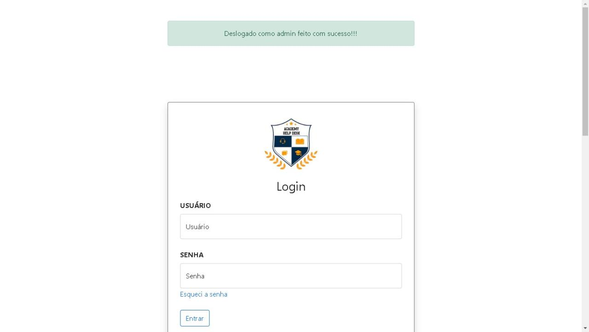

Habilidades
Interesses
Aprimorar linguagens já conhecidas.
Descobrir novos meios e formas criativas de desenvolvimento
Aprimorar planejamento, liderança de projetos e trabalho em equipe
Projetos
Academy Help Desk
Academy Help Desk
Projeto foi criado com intuito de suprir a necessidade das etec Sobregerenciamento de chamados,
no qual não possuiam um programa para gerenciar.

Sumula_site_Xadrez
Sumula_site_XadrezProjeto criado em atividade avaliativa durante estudos da Etec